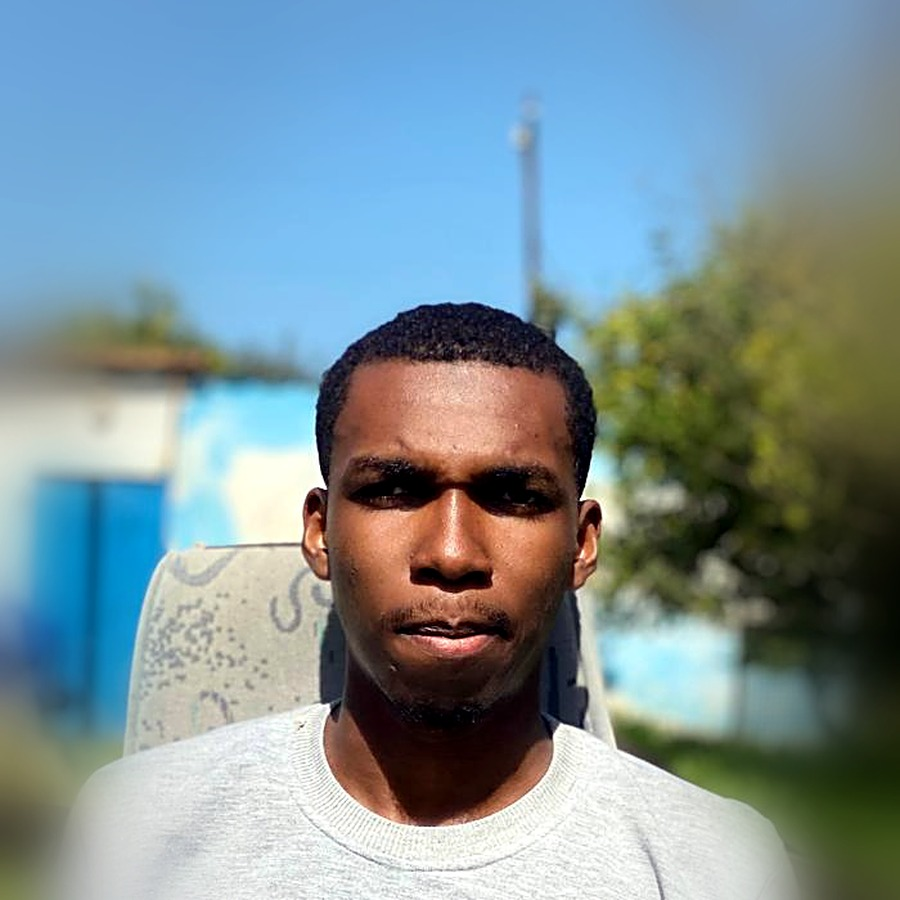

Cybersécurité
pfSenseSuricataOpenVPN
Kali LinuxNmapWireshark
MetasploitHardening Linux
Étudiant Ingénieur en Sécurité de l'Information et Technologie
Élève-ingénieur en 3ᵉ année à la Faculté des Sciences et Techniques de Marrakech (Université Cadi Ayyad), passionné par la cybersécurité, les systèmes Linux et la sécurité des applications web. Je recherche un PFE (Stage de Fin d'Études) en cybersécurité et/ou développement web.

Étudiant en 3ᵉ année du cycle Ingénieur en Sécurité de l'Information et Technologie à la Faculté des Sciences et Techniques de Marrakech, je m'intéresse particulièrement à la cybersécurité, aux systèmes Linux et à la sécurité des applications web (pentest).
Curieux et motivé à apprendre, j'aime relever des défis techniques, notamment à travers les CTF, et mettre mes connaissances en pratique via des projets concrets, qu'il s'agisse de sécurisation d'infrastructures réseau ou de développement d'applications web.
Je suis actuellement à la recherche d'un PFE (Stage de Fin d'Études) dans les domaines de la cybersécurité et/ou du développement web.
Compétences acquises via des projets académiques, des laboratoires pratiques et un stage en entreprise.
Une sélection de projets en sécurité réseau, cryptographie et développement web.
Conception d'une architecture réseau segmentée avec accès distant sécurisé et détection d'intrusion.
Projet académique de sécurité réseau, réalisé dans le cadre de la formation en sécurité de l'information.
Mettre en place une architecture réseau segmentée offrant un accès distant sécurisé et une détection des intrusions en temps réel.
Architecture fonctionnelle dont la détection et le blocage des attaques simulées ont été vérifiés avec Suricata.
Architecture réseau intégrant une DMZ pour isoler les services exposés à Internet.
Projet académique complémentaire au travail sur VPN/IDS/IPS, centré sur l'isolation des services exposés.
Séparer les services accessibles depuis Internet du réseau interne grâce à une zone démilitarisée (DMZ).
Segmentation WAN/DMZ/LAN opérationnelle, avec des règles de filtrage testées sur des scénarios d'attaque réels.
Étude et implémentation d'un schéma de signature numérique basé sur les courbes elliptiques.
Projet académique de cryptographie appliquée, autour des mécanismes de signature numérique.
Comprendre et implémenter un algorithme de signature basé sur les courbes elliptiques, du calcul mathématique à la vérification.
Implémentation fonctionnelle capable de générer et de vérifier une signature ECDSA sur la courbe choisie.
Application web de diagnostic assisté par IA à partir d'images médicales.
Projet académique associant développement web et intelligence artificielle appliquée à la santé.
Fournir un outil d'aide au diagnostic de la rétinopathie diabétique à partir d'images médicales.
Application fonctionnelle permettant l'analyse d'images médicales et le suivi des dossiers patients depuis un tableau de bord dédié.
Plateforme e-commerce avec prise de commande via WhatsApp et back-office d'administration.
Projet académique de développement web full-stack.
Concevoir une plateforme e-commerce complète, de la présentation du catalogue à la prise de commande.
Plateforme fonctionnelle permettant la commande via WhatsApp et la gestion du catalogue depuis un back-office dédié.
Contrôle du volume système en temps réel par reconnaissance de gestes de la main via webcam.
Projet personnel d'exploration de la vision par ordinateur.
Contrôler le volume du système sans contact physique, uniquement par reconnaissance de gestes.
Application fonctionnelle ajustant le volume en temps réel selon l'écart mesuré entre le pouce et l'index.
Application web de gestion de tâches quotidiennes avec authentification.
Projet académique de développement web.
Développer une application de gestion des tâches quotidiennes avec un accès personnel sécurisé.
Application fonctionnelle avec gestion complète des tâches et authentification des utilisateurs.
OVIVIA IA · Qatar
Apprentissage pratique par les certifications, les CTF et les compétitions de cybersécurité.
Université Cadi Ayyad, Faculté des Sciences et Techniques de Marrakech
Université Cadi Ayyad, Faculté des Sciences et Techniques de Marrakech
GSDP, Ouani-Anjouan, Comores
Ouvert à un PFE, un stage ou une opportunité junior en cybersécurité et/ou développement web. N'hésitez pas à me contacter directement.